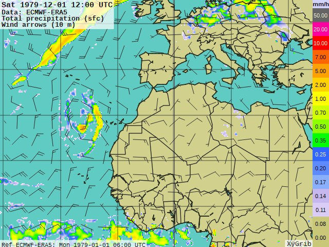

data1979 <- read.csv("data_too_big_for_git/noon_1979_morocco_era5.csv") # only noon
data2020 <- read.csv("data_too_big_for_git/noon_2020_morocco_era5.csv") # only noon
nov2020_hourly <- read.csv("data_too_big_for_git/nov_2020_hourly_morocco_region2.csv") # only november
daily1979 <- read.csv('data_too_big_for_git/hourly_1979_morocco_region2_era5.csv') # only precipitation
head(data2020, 1)Week 2: Morocco Extreme Precipitation Analysis
Week 2 Review
-
- Extreme rainfall events in Morocco: Spatial dependence and climate drivers
-
- A regionalization approach for rainfall based on extremal dependence
Overview
The hope from last week was that I could reproduce the results
- Quick talk about methods used in the paper
- However, no code availability
- Spent a lot of time trying to replicate with no success
There are 3 main datasets used to analyze the Morocco paper
ERA5 (main one- the .grib or .nc file)
- Perform EDA to understand variables, Q-Q plots to analyze heavy tails, and also looking at spatial dependence
North Atlantic Oscillation
Madden Julian Oscillation
Methods of the paper
Extreme Precipitation Events are defined as instances in which the amount of rain or snow experienced in a location substantially exceeds what is normal. We can determine what is abnormal using Extreme Value Theory.
Extreme Value Theory
- Enables us to predict the likelihood of extreme values appearing in a data set
- There are 2 main ways of EVT
- Peak over threshold (did not choose this method because we do not care about knowing/predicting when an extreme precipitation event occurs, just how often per region)
- Finding block Maxima (useful because we are looking at things such as annual maximum rainfall)
F-madogram Distance
- Looks at the maximum values in the time series at two different stations and checks their pairwise dependence
Hierarchial clustering
- At this point, it is not interpretable since it is in the F-madogram space instead of the Euclidean space. Therefore, we need an additional classification step
Classification using a weighted k-nearest neighbors
Visualizing requires fitting max-stable processes to the stations in each region
Complicated to reproduce, would take a lot more time and not be that helpful
Using the .nc file
Can use the library(ncdf4) with functions such as:
- ‘nc_open()’ and ’nc_close()
- ‘nc_inq()’ and ‘nc_sync()’
- ‘ncatt_get()’, ‘ncatt_put()’, ‘ncatt_del()’
- A lot of basic add/view/delete data
- easiest to work in csv format
Visualizing the .grib file

Can convert to .CSV through python code
- additional data cleaning with renaming variables and splitting time
- precipitation was given in m, adjusted so that presented in mm
- As well as getting geopotential height from geopotential/9.80665 (Earth’s gravitational acceleration)
- Comment on era5 data pulling difficulty
Visualization of selected data
Simple EDA
A general sense of the data
str(data1979)Precipitation
# Group by date and the specific location (longitude and latitude)
daily_precipitation <- nov2020_hourly %>%
filter(longitude == -5 & latitude == 36) %>% #Filter for specific location
group_by(year, month, day) %>%
summarise(daily_total_precipitation = sum(total_precipitation),
.groups = "keep")
# Plot the daily total precipitation on a bar graph
p <- ggplot(daily_precipitation, aes(x = as.Date(paste(year, month, day, sep = "-")), y = daily_total_precipitation)) +
geom_bar(stat = "identity", fill = "skyblue") +
labs(title = "Daily Sum Total Precipitation \nFor a Specific location in Morocco in November", x = "Date", y = "Total Precipitation (mm)") +
theme_light() +
theme(axis.text.x = element_text(angle = 90, vjust = 0.5, hjust=1))
# Included the mean total precipitation rate for each hour
p + geom_line(data = nov2020_hourly %>%
filter(longitude == -5 & latitude == 36) %>%
group_by(year, month, day) %>%
summarise(sum_mean_total_precip_rate = sum(mean_total_precip_rate), .groups = "keep"),
aes(x = as.Date(paste(year, month, day, sep = "-")),
y = sum_mean_total_precip_rate * 1000),
color = "red") Analyzing Temporal and Spatial Dependence
- We can get a general idea of spatial dependence by choosing different places in Morocco
- We can choose 2 locations within the same region, and then 1 from a different region to help get a sense of spatial dependence.
- For temporal dependence, I chose to look at 3 times, being 1979 (beginning), 2019, and 2020 (end).
# the following subsets give daily data for one specific location for 1 year
# three region selections from 1979
region5_1979 <- subset(data1979, latitude == 27 & longitude == -10) # sahara
region2_1_1979 <- subset(data1979, latitude == 35 & longitude == -2) # region 2
region2_2_1979 <- subset(data1979, latitude == 33 & longitude == -4) # region 2
# three region selections from 2020
region5_2020 <- subset(data2020, latitude == 27 & longitude == -10) # sahara
region2_1_2020 <- subset(data2020, latitude == 35 & longitude == -2) # region 2
region2_2_2020 <- subset(data2020, latitude == 33 & longitude == -4) # region 2
# hourly precipitation data
hourly_region5_1979 <- subset(daily1979, latitude == 27 & longitude == -10) # sahara
hourly_region2_1_1979 <- subset(daily1979, latitude == 35 & longitude == -2) # region 2
hourly_region2_2_1979 <- subset(daily1979, latitude == 33 & longitude == -4) # region 2Q-Q plots
- QQ plots are useful to determine how heavy-tailed the data is.
- Heavy tails indicate there is a larger probability of getting very large values
- We can look at daily data in 2020 for all locations in Morocco
Issues still need to be resolved
- For example, I first tried a Q-Q plot of total precipitation for the noon hour in 2020 for all of Morocco
- However, most days have 0 precipitation, so therefore it isn’t very useful to look at:

Region 5
daily_precipitation_per_hour <- hourly_region5_1979 %>%
group_by(day) %>%
summarise(total_daily_precipitation = sum(total_precipitation))
# here in case wondering about true daily, instead of day of month
#daily_precipitation_per_hour <- hourly_region5_1979 %>%
# mutate(time = as.POSIXct(time, format = "%Y-%m-%d %H:%M:%S"),
# day_of_year = as.numeric(format(time, "%j"))) %>%
# group_by(day_of_year) %>%
# summarise(total_daily_precipitation = sum(total_precipitation))
qqnorm(daily_precipitation_per_hour$total_daily_precipitation,
frame = TRUE,
ylab = "Average total daily precipitation per day of month \nfor Morocco Region 5 sample in 1979",
)
qqline(daily_precipitation_per_hour$total_daily_precipitation,
col = "steelblue",
lwd = 2)Region 2
daily_precipitation_per_hour2 <- hourly_region2_1_1979 %>%
group_by(day) %>%
summarise(total_daily_precipitation = sum(total_precipitation))
qqnorm(daily_precipitation_per_hour2$total_daily_precipitation,
frame = TRUE,
ylab = "Average total daily precipitation per day of month \nfor Morocco Region 2 sample in 1979",
)
qqline(daily_precipitation_per_hour2$total_daily_precipitation,
col = "steelblue",
lwd = 2)Other QQ plots:
- daily averages of precipitation per hour
- total precipitation per each day over many years
- comparing different (whole) regions of Morocco
- Etc. Each of these are time consuming but interesting to look at!
Possible Spatial Dependence packages
- Have an interest in reproducing images that show the anomalies
# NOTE: meant for continous coordinates, not discrete
library(fields)
# good for plotting
# Plotting sea surface temperature
#image.plot(na.omit(data1979$longitude), na.omit(data1979$latitude),
# na.omit(data1979$sea_surface_temp), col = heat.colors(20),
# main = "Sea Surface Temperature")
# Creating a spatial grid
#x <- seq(min(data1979$longitude), max(data1979$longitude), length.out = 100)
#y <- seq(min(data1979$latitude), max(data1979$latitude), length.out = 100)
#grid <- expand.grid(x, y)
# Interpolate sea surface temperature values
#interp_temp <- interp.surface(list(data1979$longitude, data1979$latitude), data1979$sea_surface_temp, grid)
#image.plot(interp_temp, main = "Interpolated Sea Surface Temperature")
#install.packages("gstat")
library(gstat)
library(sp)
library(dplyr)
# Convert to spatial object
#coordinates(region5_1979) <- ~longitude + latitude
# Create variogram for sea_surface_temp
#vgm_sahara <- variogram(geopotential_height ~ 1, region5_1979)
# Fit variogram model
#fit_vgm_sahara <- fit.variogram(vgm_sahara, model = vgm("Sph"))
# Plot the variogram
#plot(vgm_sahara, fit_vgm_sahara)Other Datasets Used
NAO Index
NAO_index_values <- read.csv('data_too_big_for_git/nao_info.csv', sep=",", header=TRUE)
str(NAO_index_values)Let’s plot the data!
# make a time series object
nao_ts_1979 <- ts(data = NAO_index_values$aao_index ,
start=c(1979,1),
end=c(1979, 365),
frequency=365)
mean(nao_ts_1979)
# plot the data
basic_plot <- plot(x=nao_ts_1979,
main="North Atlantic Oscillation 1979",
ylab="aao index",
xlab="Year")
abline(h = 0, col = "red")the ‘aao_index’ variable represents the NAO index values, which are based on the surface sea-level pressure difference between the Subtropical High and the Subpolar Low in the North Atlantic region.
The NAO index quantifies the strength and position of the North Atlantic atmospheric circulation patterns, with positive values indicating a positive phase of the NAO (stronger-than-average westerly winds and storms in the North Atlantic) and negative values indicating a negative phase of the NAO (weaker westerlies and often colder conditions over parts of North America and Europe).
Strong positive phases of the NAO tend to be associated with below-normal temperatures in the Middle East.
(Info taken from https://www.ncei.noaa.gov/access/monitoring/nao/)
Why is this important?
EPEs in Region 1 AND 3 are preceded by a negative NAO phase persisting for a whole week prior to EPEs
The majority of cyclones affecting regions 4 and 5 come from the North Atlantic
Potential AR process?
# acf plot/ correlogram
acf(x=nao_ts_1979,
plot=TRUE,
lag.max=40,
main="North Atlantic Oscillation 1979")
# pacf plot
pacf(x=nao_ts_1979,
plot=TRUE,
lag.max=40,
main="North Atlantic Oscillation 1979")MJO Index
The Madden Julian Oscillation influences not only the tropical weather and climate, but also extratropical circulations and wave patterns
Teleconnection indices from the MJO index, dataset website linked here
Reports of the OMI values
- which is the OLR MJO Index
- In other words, the Outgoing Longwave Radiation, Madden Julian Oscillation Index
- Simply put: a specific way to measure the MJO track
OMI_values <- read.csv('data_too_big_for_git/OMI_values_Morocco.txt',
sep= "",
header = FALSE,
col.names=c("year", "month", "day", "hour",
"PC1_coeff", "PC2_coeff",
"PC1_PC2_amplitude"))
# Remove rows for years 2021 and 2022 (not included in analysis)
OMI_values <- OMI_values %>%
filter("year" != 2021 & "year" != 2022)
# Remove the "hour" column since no data present
OMI_values <- select(OMI_values, -hour)
str(OMI_values)What do we expect from this data?
- Typically looks like:
[ (https://ds.data.jma.go.jp/tcc/tcc/library/jmspEAWM12/Monsoon_Meeting_Matueda.pdf)
(https://ds.data.jma.go.jp/tcc/tcc/library/jmspEAWM12/Monsoon_Meeting_Matueda.pdf)
How is it important to the paper?
The MJO index found that Region 2 EPEs may be further enhanced by the MJO’s phases 2 and 3.
Phase 3 of the MJO is a precursor to Extreme Precipitation in Region 4.
For more info and understanding about the phases, go here.
Basic Plotting of the data
# Filter data for November and July in 1979 and 2020
nov_1979 <- subset(OMI_values, year == 1979 & month == 11)
nov_2020 <- subset(OMI_values, year == 2020 & month == 11)
jul_1979 <- subset(OMI_values, year == 1979 & month == 7)
jul_2020 <- subset(OMI_values, year == 2020 & month == 7)
plot_nov_1979 <- ggplot(nov_1979, aes(x = PC1_coeff, y = PC2_coeff)) +
geom_path() +
geom_point() +
coord_polar() +
ggtitle("November 1979")
plot_nov_2020 <- ggplot(nov_2020, aes(x = PC1_coeff, y = PC2_coeff)) +
geom_path() +
geom_point() +
coord_polar() +
ggtitle("November 2020")
plot_jul_1979 <- ggplot(jul_1979, aes(x = PC1_coeff, y = PC2_coeff)) +
geom_path() +
geom_point() +
coord_polar() +
ggtitle("July 1979")
plot_jul_2020 <- ggplot(jul_2020, aes(x = PC1_coeff, y = PC2_coeff)) +
geom_path() +
geom_point() +
coord_polar() +
ggtitle("July 2020")
# Combine plots into a single grid layout
grid.arrange(plot_nov_1979, plot_nov_2020, plot_jul_1979, plot_jul_2020,
ncol = 2,
nrow = 2,
top = "MJO Patterns for November and July in 1979 and 2020",
widths = c(4, 4),
heights = c(4, 4)) Comments:
Principal Component 1 (PC1) and Principal Component 2 (PC2) coefficients capture the variability or patterns present in the MJO data.
- These coefficients are likely derived from applying principal component analysis (PCA) to the original MJO data, and they represent the direction and magnitude of the dominant patterns of variability.
Patterns in the movement of the connected dots can reveal information - more circular or closed trajectory might indicate a more stable or repeating pattern, while a more erratic or spiraling trajectory might suggest more variable or changing MJO behavior.
Distance can represent magnitude/strength
Clustering may indicate stable or repeating MJO patterns, while spreading out could suggest more variable or erratic behavior.
Note that this is more spatial data than it is time series data, so would need to look into other methods to analyze it.
Reflection
Code should be open source in research! I spent too much time trying to reproduce the results of the paper.
Interesting topics to continue with:
- Code to find F-madogram distance
- Using PhD’s paper methods on Morocco
- Better define both NAO and MJO influence on Morocco
- Bivariate time series analysis
Thanks!